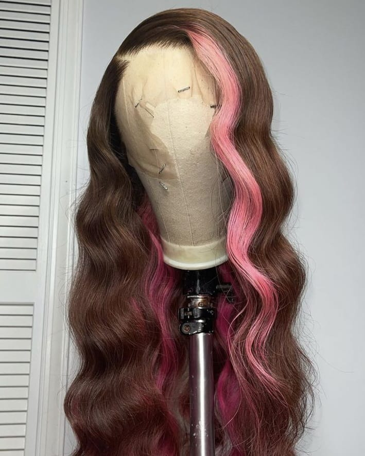
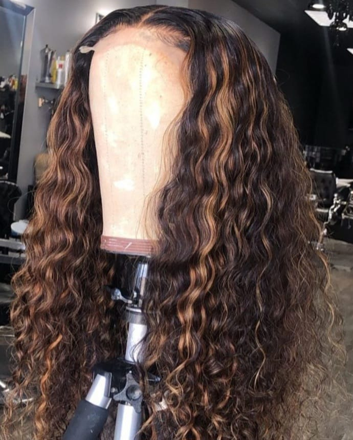

O que é Wig?
A wig é uma peruca pronta que pode ser colocada e retirada com facilidade, sendo essa a sua principal diferença em relação às outras técnicas como a front lace e o entrelace. Ela é ideal para quem deseja praticidade e a possibilidade de mudar o visual rapidamente, sem a necessidade de procedimentos mais demorados. Diferente do entrelace, que é uma técnica de costura feita diretamente no cabelo natural e pode durar semanas, a wig não é fixa. Ela pode ser retirada diariamente, o que facilita a higienização tanto da peça quanto do couro cabeludo.
Em comparação com a front lace, a wig pode ou não ter lace na parte frontal. Quando não possui lace, o acabamento pode ser menos natural na linha do cabelo. Já as lace wigs (perucas com lace) oferecem um efeito mais realista, semelhante ao da front lace, mas continuam mantendo a praticidade de serem removíveis. Portanto, a grande diferença da wig está na sua versatilidade e facilidade de uso, sendo uma opção prática para quem busca conforto e mudança rápida de estilo.

